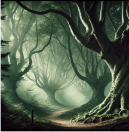
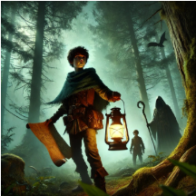
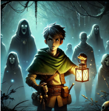
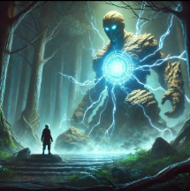

La Floresta se alzaba como un reino olvidado, un bosque tan antiguo que sus raíces parecían sostener el tiempo mismo. Sus árboles se alzaban como titanes dormidos, y entre su follaje denso, la luz del sol apenas lograba filtrarse. En la aldea de Riventha, todos conocían las historias: aquellos que entraban en la Floresta rara vez regresaban. No porque estuviera encantada —o al menos eso decían—, sino porque su interior era un laberinto vivo, cambiante, donde los caminos nunca eran los mismos dos veces.
Pero cuando la aldea comenzó a marchitarse sin razón aparente, Kael no tuvo opción. Primero fue el agua, que dejó de brotar de los pozos. Luego, las cosechas se volvieron cenizas en los campos. Finalmente , una sombra invisible se instaló en las casas, volviendo los sueños de los aldeanos pesadillas sin fin. "La Floresta está enferma", dijo la anciana Lyara, la última que recordaba los viejos tiempos. "Y si no sanamos su corazón, moriremos con ella". Así, Kael partió al amanecer, llevando consigo una linterna de cristal encantado y un mapa viejo, cuyos trazos temblorosos hablaban más de miedo que de certeza.
El bosque lo recibió con un silencio sofocante. No había pájaros ni viento, solo el crujir de las hojas secas bajo sus botas. Con cada paso, sentía que algo lo observaba desde la espesura. A medida que avanzaba, descubrió que los senderos no solo cambiaban: parecían moverse cuando no miraba. Árboles que antes estaban a su derecha aparecían ahora a su izquierda, y claros abiertos se cerraban como si nunca hubieran existido. Finalmente, tras horas de vagar, encontró las primeras ruinas. Piedras cubiertas de musgo y raíces entrelazadas con inscripciones antiguas. Fue entonces cuando vio las sombras. No eran meros juegos de luz: se movían con voluntad propia, deslizándose entre los troncos, susurrando en lenguas olvidadas. Kael sintió su presencia envolviéndolo, y por un momento, la linterna en su mano pareció parpadear. Avanzó, guiado por un instinto que no entendía. En lo profundo de la Floresta, descubrió un altar cubierto de enredaderas. En su centro, una figura de piedra representaba a un ser antiguo: el Guardián de la Floresta. Lyara había hablado de él, un espíritu protector que velaba por el equilibrio del bosque y la aldea. Pero la estatua estaba agrietada, y en su rostro petrificado solo quedaba una sombra de dolor.
Las sombras lo rodearon entonces, formando figuras distorsionadas, recuerdos de aquellos que se habían perdido en la Floresta antes que él. Entre ellas, reconoció rostros conocidos: antiguos aldeanos, viajeros desaparecidos, incluso su propio padre, que había partido años atrás y nunca regresó.
"La Floresta no está enferma", susurró una voz en su mente. "Está vengándose". Kael comprendió la verdad: el bosque no había cambiado solo por el paso del tiempo. Los humanos habían tomado demasiado, cortado árboles sagrados, roto el pacto con el Guardián. Y ahora, el Guardián dormía, atrapado en un ciclo de rabia y sufrimiento, convirtiendo la Floresta en un laberinto sin salida.
Si Kael quería salvar su aldea, no bastaba con escapar. Debía restaurar el equilibrio. Y para hacerlo, tendría que despertar al Guardián... o enfrentarlo.